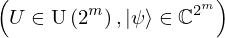
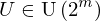
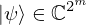
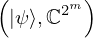
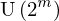
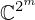
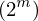
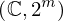

Expression of type And¶
from the theory of proveit.physics.quantum.circuits¶
In [1]:
import proveit
# Automation is not needed when building an expression:
proveit.defaults.automation = False # This will speed things up.
proveit.defaults.inline_pngs = False # Makes files smaller.
%load_expr # Load the stored expression as 'stored_expr'
# import Expression classes needed to build the expression
from proveit import U, m
from proveit.linear_algebra import Unitary
from proveit.logic import And, InSet
from proveit.numbers import Exp, two
from proveit.physics.quantum import m_ket_domain, var_ket_psi
In [2]:
# build up the expression from sub-expressions
expr = And(InSet(U, Unitary(Exp(two, m))), InSet(var_ket_psi, m_ket_domain))
In [3]:
# check that the built expression is the same as the stored expression
assert expr == stored_expr
assert expr._style_id == stored_expr._style_id
print("Passed sanity check: expr matches stored_expr")
In [4]:
# Show the LaTeX representation of the expression for convenience if you need it.
print(stored_expr.latex())
In [5]:
stored_expr.style_options()
In [6]:
# display the expression information
stored_expr.expr_info()
| core type | sub-expressions | expression | |
|---|---|---|---|
| 0 | Operation | operator: 1 operands: 2 | |
| 1 | Literal |  | |
| 2 | ExprTuple | 3, 4 |  |
| 3 | Operation | operator: 6 operands: 5 |  |
| 4 | Operation | operator: 6 operands: 7 |  |
| 5 | ExprTuple | 8, 9 |  |
| 6 | Literal |  | |
| 7 | ExprTuple | 10, 11 |  |
| 8 | Variable |  | |
| 9 | Operation | operator: 12 operand: 17 |  |
| 10 | Variable |  | |
| 11 | Operation | operator: 14 operands: 15 |  |
| 12 | Literal | ||
| 13 | ExprTuple | 17 |  |
| 14 | Literal |  | |
| 15 | ExprTuple | 16, 17 |  |
| 16 | Literal |  | |
| 17 | Operation | operator: 18 operands: 19 |  |
| 18 | Literal |  | |
| 19 | ExprTuple | 20, 21 |  |
| 20 | Literal |  | |
| 21 | Variable |  |